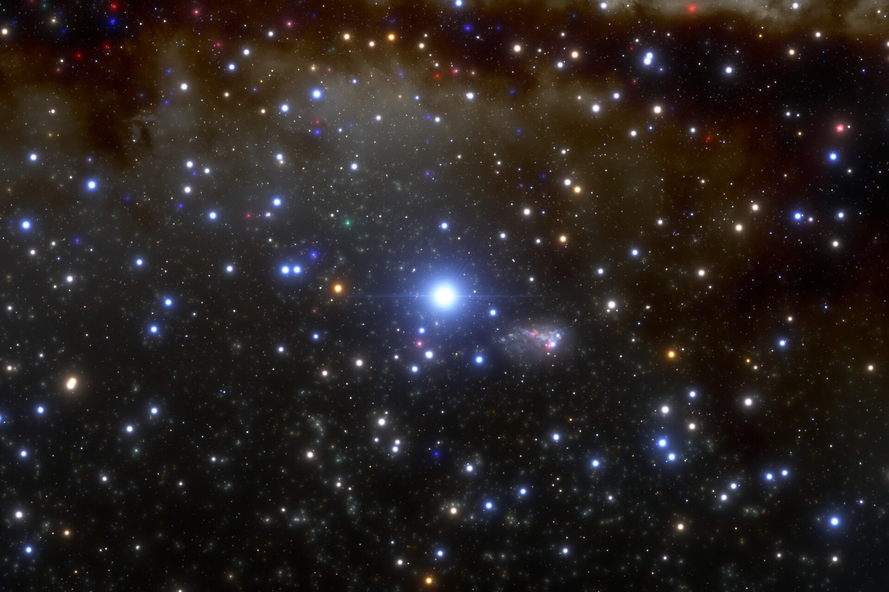

A MASSIVE star is a star that has a mass much larger than our Sun. This ranges from 10 times larger than the Sun to 100: massive stars are defined by some sources (including NASA) as starting at 8 solar masses. The largest star, R136a1, has a solar mass of 291, plus or minus 46.
Massive star lifecycles differ to low mass stars, although there are some similarities.
BEGINNING
A star forms from clouds of dust, in a "stellar nursery". This nursery is a nebula,
which is a collection of gas and dust in space (you will soon see where these come from).
These stellar nurseries are cold, which causes the gases
in these molecular clouds to "clump". These clumps can collect more matter or collide with each other, increasing its mass and creating a stronger
gravitational force. These stars are found in stellar clusters, and are very rarely alone. High-mass stars require a lot of dense gas and extreme conditions to form, more so than
low-mass stars. This makes them much rarer: less than 1% of stars have a mass greater than 8 solar masses.

PHOTO FROM BRITANNICA - NGC 6705.
EARLY LIFE
The star has reached infancy. We call this a protostar. Protostars form from their previous dense cores (above). As it collects mass from its parent cloud, the force of its gravity overcomes the gas pressure and magnetic pressure that balances against gravity, causing it to collapse into itself. The gas that collapses in the center of the core forms a low-mass protostar, and then a protoplanetary disc, which is a disc of gas and dust that surrounds the star. The temperature at the centre of this star is not as hot as it could be yet, as hydrogen is not at this point fusing with itself. This then changes when hydrogen-2 fuses with hydrogen-1 to create helium-3 (fancy that). The heat energy from this fusion reaction inflates the protostar, and the star goes into the main sequence stage of its life.

PHOTO FROM NASA
MAIN SEQUENCE
Here, in the stars adult age, is where the main differences between high and low mass stars start to become apparent. High mass stars have a higher gravity than lower mass stars, causing higher pressure and a hotter temperature. Hotter stars (10,000K up to 50,000K) appear blue from the high amount of heat. This heat also means that massive stars fuse hydrogen at a faster rate, burning through its fuel quickly, causing the star to have a shorter life than its lower mass counterparts. Massive stars can live for millions of years - main sequence is the longest phase of a star's life.
PHOTO FROM NEWATLAS - LOOK AT THAT BLUE STAR IN THE MIDDLE. THAT'S R136a1, THE LARGEST STAR IN THE KNOWN UNIVERSE.
GIANT STAGE
Just like humans, some stars inflame and become red when reaching the end of their life. Massive stars (specifically under 30-40 solar masses) become red supergiants, which as the name suggests, are much larger compared to their main sequence selves. Stars above 40 solar masses do not become red supergiants, and low-mass stars below 8 solar masses become red giants. At this later stage of a star's life, the hydrogen that has been fusing into helium has been spent up, causing the core to collapse, as the energy produced by that fusion is what balances against the force of gravity. This core collapse increases its temperature and pressure, which causes the star to expand. At this point, the core shrinks and is composed of helium, which fuses into carbon.

GIF FROM NASA: SHOWN HERE IS A RED GIANT HAVING A PLANET FOR LUNCH. NOTE THAT THE MAIN DIFFERENCE BETWEEN A RED GIANT AND RED SUPERGIANT IS ITS LUMINOSITY (AND SIZE).

HERE, THE LOWER THE ABSOLUTE MAGNITUDE IS (THE FURTHER UP THE GRAPH), THE GREATER THE LUMINOSITY (COURTESY OF WIKIPEDIA).
FINAL FATES
When a star dies, it explodes. The carbon from the last phase fuses into heavier elements, such as oxygen, neon, and magnesium. This continues, each fuel lasting less time, until silicon fuses into iron. This process happens over a few million years. It takes days for the star to run out of fuel by the time silicon fuses into iron. Further fusing would require energy, instead of releasing energy like the previous fusion processes have. The iron core collapses and rebounds, creating a shock wave that results in an explosion called a supernova. This supernova adds to molecular clouds, where it will be used to make new stars.
This isn't the end of the story, however. When a massive star explodes into a supernova, the core stays intact. This is called a star remnant. Depending on the mass of this remnant, it may either be a neutron star or a black hole. Remnants under 3 solar masses are typically neutron stars, and remnants over 3 solar masses are typically black holes.

RETRIEVED FROM BRITANNICA: FIRST EVER PHOTO OF A BLACK HOLE